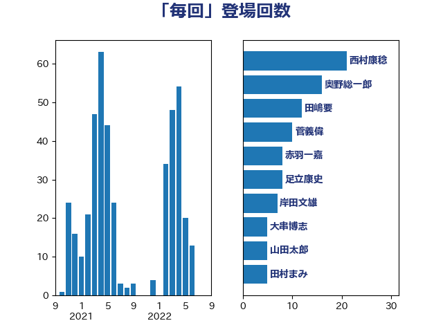

単語「毎回」

| 西村康稔 | 自由民主党 | 21 回 |
| 奥野総一郎 | 立憲民主党 | 16 回 |
| 田嶋要 | 立憲民主党 | 12 回 |
| 菅義偉 | 自由民主党 | 10 回 |
| 赤羽一嘉 | 公明党 | 8 回 |
| 足立康史 | 日本維新の会 | 8 回 |
| 岸田文雄 | 自由民主党 | 7 回 |
| 大串博志 | 立憲民主党 | 5 回 |
| 山田太郎 | 自由民主党 | 5 回 |
| 田村まみ | 国民民主党 | 5 回 |
| 青山大人 | 立憲民主党 | 5 回 |
| 高橋千鶴子 | 日本共産党 | 5 回 |
| 上川陽子 | 自由民主党 | 4 回 |
| 中野洋昌 | 公明党 | 4 回 |
| 串田誠一 | 日本維新の会 | 4 回 |
| 宮本徹 | 日本共産党 | 4 回 |
| 平井卓也 | 自由民主党 | 4 回 |
| 木原誠二 | 自由民主党 | 4 回 |
| 東徹 | 日本維新の会 | 4 回 |
| 梅村みずほ | 日本維新の会 | 4 回 |
| 浅野哲 | 国民民主党 | 4 回 |
| 浮島智子 | 公明党 | 4 回 |
| 蓮舫 | 立憲民主党 | 4 回 |
| 上田清司 | 国民民主党 | 3 回 |
| 伊佐進一 | 公明党 | 3 回 |
| 古賀之士 | 立憲民主党 | 3 回 |
| 嘉田由紀子 | 無所属 | 3 回 |
| 塩村あやか | 立憲民主党 | 3 回 |
| 寺田学 | 立憲民主党 | 3 回 |
| 寺田静 | 無所属 | 3 回 |
| 小田原潔 | 自由民主党 | 3 回 |
| 山田賢司 | 自由民主党 | 3 回 |
| 川田龍平 | 立憲民主党 | 3 回 |
| 打越さく良 | 立憲民主党 | 3 回 |
| 新藤義孝 | 自由民主党 | 3 回 |
| 森まさこ | 自由民主党 | 3 回 |
| 森屋隆 | 立憲民主党 | 3 回 |
| 武田良太 | 自由民主党 | 3 回 |
| 河西宏一 | 公明党 | 3 回 |
| 石井苗子 | 日本維新の会 | 3 回 |
| 落合貴之 | 立憲民主党 | 3 回 |
| 豊田俊郎 | 自由民主党 | 3 回 |
| 遠藤敬 | 日本維新の会 | 3 回 |
| 音喜多駿 | 日本維新の会 | 3 回 |
| 麻生太郎 | 自由民主党 | 3 回 |
| 一谷勇一郎 | 日本維新の会 | 2 回 |
| 三木圭恵 | 日本維新の会 | 2 回 |
| 中川正春 | 立憲民主党 | 2 回 |
| 伊藤孝江 | 公明党 | 2 回 |
| 吉田はるみ | 立憲民主党 | 2 回 |
| 吉田統彦 | 立憲民主党 | 2 回 |
| 小泉進次郎 | 自由民主党 | 2 回 |
| 小熊慎司 | 立憲民主党 | 2 回 |
| 小西洋之 | 立憲民主党 | 2 回 |
| 山井和則 | 立憲民主党 | 2 回 |
| 山崎誠 | 立憲民主党 | 2 回 |
| 平将明 | 自由民主党 | 2 回 |
| 斉藤鉄夫 | 公明党 | 2 回 |
| 木村英子 | れいわ新選組 | 2 回 |
| 松原仁 | 立憲民主党 | 2 回 |
| 梅村聡 | 日本維新の会 | 2 回 |
| 浅川義治 | 日本維新の会 | 2 回 |
| 浜口誠 | 国民民主党 | 2 回 |
| 田島麻衣子 | 立憲民主党 | 2 回 |
| 田村智子 | 日本共産党 | 2 回 |
| 石破茂 | 自由民主党 | 2 回 |
| 米山隆一 | 立憲民主党 | 2 回 |
| 萩生田光一 | 自由民主党 | 2 回 |
| 谷田川元 | 立憲民主党 | 2 回 |
| 金子恵美 | 立憲民主党 | 2 回 |
| 鈴木敦 | 国民民主党 | 2 回 |
| 長妻昭 | 立憲民主党 | 2 回 |
| 階猛 | 立憲民主党 | 2 回 |
| 青柳仁士 | 日本維新の会 | 2 回 |
| 馬場伸幸 | 日本維新の会 | 2 回 |
| 中島克仁 | 立憲民主党 | 1 回 |
| 中西祐介 | 自由民主党 | 1 回 |
| 丸川珠代 | 自由民主党 | 1 回 |
| 二階俊博 | 自由民主党 | 1 回 |
| 井上哲士 | 日本共産党 | 1 回 |
| 井林辰憲 | 自由民主党 | 1 回 |
| 今枝宗一郎 | 自由民主党 | 1 回 |
| 伊波洋一 | 無所属 | 1 回 |
| 伊藤俊輔 | 立憲民主党 | 1 回 |
| 前原誠司 | 国民民主党 | 1 回 |
| 加田裕之 | 自由民主党 | 1 回 |
| 務台俊介 | 自由民主党 | 1 回 |
| 勝俣孝明 | 自由民主党 | 1 回 |
| 北側一雄 | 公明党 | 1 回 |
| 北神圭朗 | 無所属 | 1 回 |
| 古川俊治 | 自由民主党 | 1 回 |
| 吉川沙織 | 立憲民主党 | 1 回 |
| 城内実 | 自由民主党 | 1 回 |
| 大塚耕平 | 国民民主党 | 1 回 |
| 太栄志 | 立憲民主党 | 1 回 |
| 室井邦彦 | 日本維新の会 | 1 回 |
| 宮本岳志 | 日本共産党 | 1 回 |
| 小川淳也 | 立憲民主党 | 1 回 |
| 小林鷹之 | 自由民主党 | 1 回 |
| 岡本あき子 | 立憲民主党 | 1 回 |
| 川合孝典 | 国民民主党 | 1 回 |
| 後藤田正純 | 自由民主党 | 1 回 |
| 後藤祐一 | 立憲民主党 | 1 回 |
| 徳永エリ | 立憲民主党 | 1 回 |
| 斎藤アレックス | 国民民主党 | 1 回 |
| 本田顕子 | 自由民主党 | 1 回 |
| 杉尾秀哉 | 立憲民主党 | 1 回 |
| 松川るい | 自由民主党 | 1 回 |
| 柚木道義 | 立憲民主党 | 1 回 |
| 柳ヶ瀬裕文 | 日本維新の会 | 1 回 |
| 榛葉賀津也 | 国民民主党 | 1 回 |
| 橋本岳 | 自由民主党 | 1 回 |
| 櫻井充 | 自由民主党 | 1 回 |
| 江田憲司 | 立憲民主党 | 1 回 |
| 河野太郎 | 自由民主党 | 1 回 |
| 河野義博 | 公明党 | 1 回 |
| 浅田均 | 日本維新の会 | 1 回 |
| 浦野靖人 | 日本維新の会 | 1 回 |
| 渡辺孝一 | 自由民主党 | 1 回 |
| 漆間譲司 | 日本維新の会 | 1 回 |
| 熊野正士 | 公明党 | 1 回 |
| 田村憲久 | 自由民主党 | 1 回 |
| 石橋通宏 | 立憲民主党 | 1 回 |
| 磯崎仁彦 | 自由民主党 | 1 回 |
| 稲富修二 | 立憲民主党 | 1 回 |
| 笹川博義 | 自由民主党 | 1 回 |
| 緒方林太郎 | 無所属 | 1 回 |
| 自見はなこ | 自由民主党 | 1 回 |
| 舟山康江 | 国民民主党 | 1 回 |
| 若宮健嗣 | 自由民主党 | 1 回 |
| 若松謙維 | 公明党 | 1 回 |
| 荒井優 | 立憲民主党 | 1 回 |
| 菅家一郎 | 自由民主党 | 1 回 |
| 藤田文武 | 日本維新の会 | 1 回 |
| 近藤和也 | 立憲民主党 | 1 回 |
| 遠藤良太 | 日本維新の会 | 1 回 |
| 野田国義 | 立憲民主党 | 1 回 |
| 金子恭之 | 自由民主党 | 1 回 |
| 鈴木俊一 | 自由民主党 | 1 回 |
| 鈴木義弘 | 国民民主党 | 1 回 |
| 青山繁晴 | 自由民主党 | 1 回 |